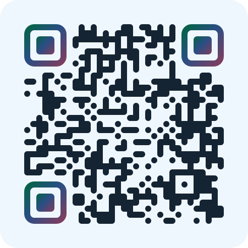

Peu de gens ont l’habitude de suivre leurs émotions, et s’y mettre demande un effort sincère : s’arrêter, nommer, mesurer. C’est cet effort qui fait abandonner.
Le but de l’application est de réduire cette tension jusqu’à en faire une habitude, avec une interface intuitive. Avec le temps, on prend du recul sur ses cycles et ses déclencheurs.
Choisir, glisser, enregistrer. Le moment est noté sans rien écrire.
On peut préciser les sensations et l’activité qui a déclenché le moment. Si on a saisi à la volée, on revient plus tard sur l’entrée pour la compléter.
19h12 · Colère 8 · « le voisin remet sa musique à fond » agacée, exaspérée · mâchoire serrée
Dès que l’émotion et l’intensité sont posées, l’application remonte les moments passés qui ressemblent à celui en cours.
Déjà vécu · il y a 2 semaines · « le voisin remet sa musique à fond » intensité 8 · musique, voisin
Une feuille blanche et un tableau sans couleur, c’est déjà une demande : remplis les cases. Pour un enfant, un adolescent, quelqu’un d’autiste ou de très anxieux, c’est le premier obstacle — avant même la question des émotions. Et puis, c’est juste fun de personnaliser sa page.
Les pastilles d’émotions ne changent pas, elles. On remerciera Vice-Versa de Disney.
| Aucun diagnostic | Aucune interprétation | Aucune relance |
|---|---|---|
| Pas de score clinique, pas de seuil, pas d’alerte, aucune catégorie nosographique. Les chiffres sont des intensités que la personne a posées elle-même. | Pas d’IA, pas de résumé automatique, pas de commentaire. | Pas de notification, pas de série à ne pas rompre, pas de badge, pas de félicitations. |
Ce qu’elle faitElle enregistre, trie, compte, et rapproche les moments qui se ressemblent selon un barème fixe. Ce que ça veut dire se discute entre vous deux.
Au premier lancement, l’application se présente elle-même : trois étapes, une scène animée chacune, pas un mode d’emploi. Elle le dit une fois, puis la page attend dans les réglages.
Rien à installer, rien à paramétrer, rien à expliquer avant d’en parler à quelqu’un.
Si la personne est suivie, l’application lui propose d’activer le mode suivi. Il ajoute un écran « Séance » qui rassemble une période — sept jours, trente jours, ou depuis la dernière séance — dans un format lisible en face à face : le compte, la répartition des émotions, puis chaque moment, fiche par fiche.
La personne relit avant de montrer et retire ce qu’elle veut ; un moment peut aussi être gardé pour soi dès l’écriture. Le reste se lit sur l’appareil, en séance.

Le journal est écrit dans le téléphone, sans compte ni serveur : vous n’avez aucune donnée de santé à conserver de votre côté.
La contrepartie compte : il n’existe aucune sauvegarde. Changer de téléphone ou vider le navigateur efface le journal. C’est pour ça que l’application demande à être ajoutée à l’écran d’accueil, et c’est la seule chose qui mérite d’être répétée à quelqu’un qui commence.
Les écrans de cette page sont l’application avec un journal fictif ; ce mode n’écrit rien sur votre appareil. Gentiane est gratuite, sans publicité. C’est un journal personnel, pas un dispositif médical, et elle ne remplace aucun suivi.
Je pense sincèrement que tout le monde peut bénéficier de tenir un journal, et j’aimerais rendre la pratique plus accessible. Pourquoi Gentiane ? J’aimais bien l’idée de « gentil + Tidiane ». Ça n’a rien à voir avec la fleur. Je ne suis pas mégalo.
Une question ou une suggestion ? ytidiane.sow@gmail.com